Equipo: Maylle Poma, Fran Diego · [integrantes]
Docente: [nombre del docente]
Fecha: 5 de noviembre de 2026
Mediciones y capturas: laptop DESKTOP-62M3KIP (Intel Core Ultra 5 235U, 12 núcleos / 14 hilos, 15.4 GB, Windows 11), gcc 16.2 -O2, MS-MPI. Todas las capturas son de consola real, tomadas en esa PC ejecutando cada comando.
En la exposición de S7 mostramos memoria compartida: OpenMP y Go, varios hilos que comparten la memoria de un computador. Este avance cubre el nivel siguiente del cronograma: memoria distribuida con MPI. Aquí cada proceso tiene su propia memoria y solo se comunica con mensajes, como en un clúster.
| Semana | Entregable del cronograma | Estado |
|---|---|---|
| S8 | Simulación de un edificio pequeño con OpenMP · informe de avance · diseño del reparto para MPI | hecho (demo de S7, este informe y docs/DISENO_REPARTO_MPI.md) |
| S9 | Malla 2D de procesos, Cannon con desplazamientos circulares, mismo resultado con 1, 4, 9 y 16 procesos | hecho |
| S10 | SUMMA con MPI_Bcast, bytes y mensajes medidos frente a Cannon, reparto de los nodos de la estructura | hecho |
| S11 | H3: cada proceso avanza su parte de la estructura, intercambia fronteras y se balancea por nnz; mismos desplazamientos que el secuencial con 1, 4, 9 y 16 procesos | hecho |
test_mpi pasa con 1, 2, 4, 6, 9 y 16 procesos. El simulador con MPI da resultados idénticos bit a bit a los del secuencial, no solo "parecidos". Los CSV de la demo con 4, 9 y 16 procesos son iguales byte por byte a los de la demo secuencial.En la demo, el programa visual tiene ahora un 4.º motor, MPI: con el edificio de 40 100 nodos y 8 procesos, la medición del visual da 0.59 s → 0.18 s (3.3×), con el resultado idéntico al secuencial (capturas 10 y 11). En las mediciones, el simulador llega a 3.96× con 9 procesos (edificio de 50 × 200) y a 3.6× con 8 procesos en el edificio grande (100 × 400). En la misma laptop, OpenMP con 8 hilos daba 2.1×. La medición también encontró un problema: con 16 procesos, más que los 14 hilos de la laptop, la espera activa de MS-MPI hunde el rendimiento, y se corrige con una opción de mpiexec (sección 6).
Usamos MS-MPI, la implementación de Microsoft, en vez de WSL2 con OpenMPI como decía el README. Se instaló así: winget install -e --id Microsoft.msmpi y winget install -e --id Microsoft.msmpisdk. Las dos implementan el mismo estándar MPI, así que el código de src/mpi/ es el mismo y en Linux compila con mpicc. Solo cambia cómo se compila, y eso lo resuelve el Makefile.
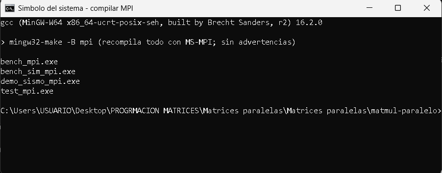
mingw32-make -B mpi recompila los 4 programas MPI con gcc 16.2 y MS-MPI, sin ninguna advertencia.En memoria distribuida, lo primero es decidir qué guarda cada proceso, porque lo que no tiene hay que mandárselo. Las dos decisiones, con sus alternativas descartadas, están en docs/DISENO_REPARTO_MPI.md.
| Por proceso y por paso | Cuánto | Cómo cambia con p |
|---|---|---|
| Cálculo de K·U | ≈ 2 · nnz/p · k operaciones | baja como 1/p |
| Datos recibidos | ≤ 2 · (vanos + 1) · k · 8 bytes | no cambia |
| Mensajes | ≤ 2 (vecino de abajo y de arriba) | no cambia |
Por eso la razón comunicación/cálculo crece como p / pisos: el reparto en franjas funciona bien mientras cada proceso tenga varios pisos. Con 16 procesos y 100 pisos, cada uno tiene al menos 6.
Balanceo de carga. partition_rows reparte por número de filas o por número de no nulos (nnz). El costo de K·U es proporcional a nnz. En el edificio casi todas las filas tienen 5 no nulos, así que los dos modos dan casi lo mismo (desbalance 1.004 en el edificio de 100 × 400). En una matriz con filas desparejas, repartir por filas da un desbalance de 3.5 y repartir por nnz lo baja a 1.0 (grupo 5 de las pruebas).
Lo demás de S8 ya estaba hecho en S7: la simulación de un edificio pequeño con OpenMP (make demo-omp). Este documento es el informe de avance.
Hay p = q² procesos en una malla q × q periódica, es decir, cada fila y cada columna se cierra en anillo (MPI_Cart_create con periods = 1). Después de un sesgo inicial, el proceso (i, j) tiene A(i, i+j) y B(i+j, j): los índices internos coinciden y puede multiplicar. Luego hace q veces: multiplicar los bloques, rotar A una posición a la izquierda y B una hacia arriba.
shift(a, grid, 1, -fila); // sesgo: la fila i de A rota i lugares a la izquierda shift(b, grid, 0, -columna); // sesgo: la columna j de B rota j lugares hacia arriba for (s = 0; s < q; s++) { local_gemm(a, b, c); // C_local += A_local · B_local shift(a, grid, 1, -1); // A una a la izquierda shift(b, grid, 0, -1); // B una hacia arriba } // shift = MPI_Cart_shift + MPI_Sendrecv_replace
MPI_Sendrecv_replace manda y recibe en la misma llamada y sobre el mismo búfer. Así todos rotan a la vez, sin interbloqueo y sin memoria extra. Cannon exige p cuadrado: con 2, 6 u 8 procesos devuelve -1 en todos (se prueba en el grupo 8).
Verificación: 5 casos contra el producto naive dentro de ε = 1e-9: 64², 37² (no es múltiplo de q), 50×30·30×70 (rectangular), 1×1 y 100×3·3×5. El error real es ~1e-15. No es bit a bit porque C(i,j) empieza a acumular por el bloque (i+j) mod q, y eso cambia el orden de las sumas.
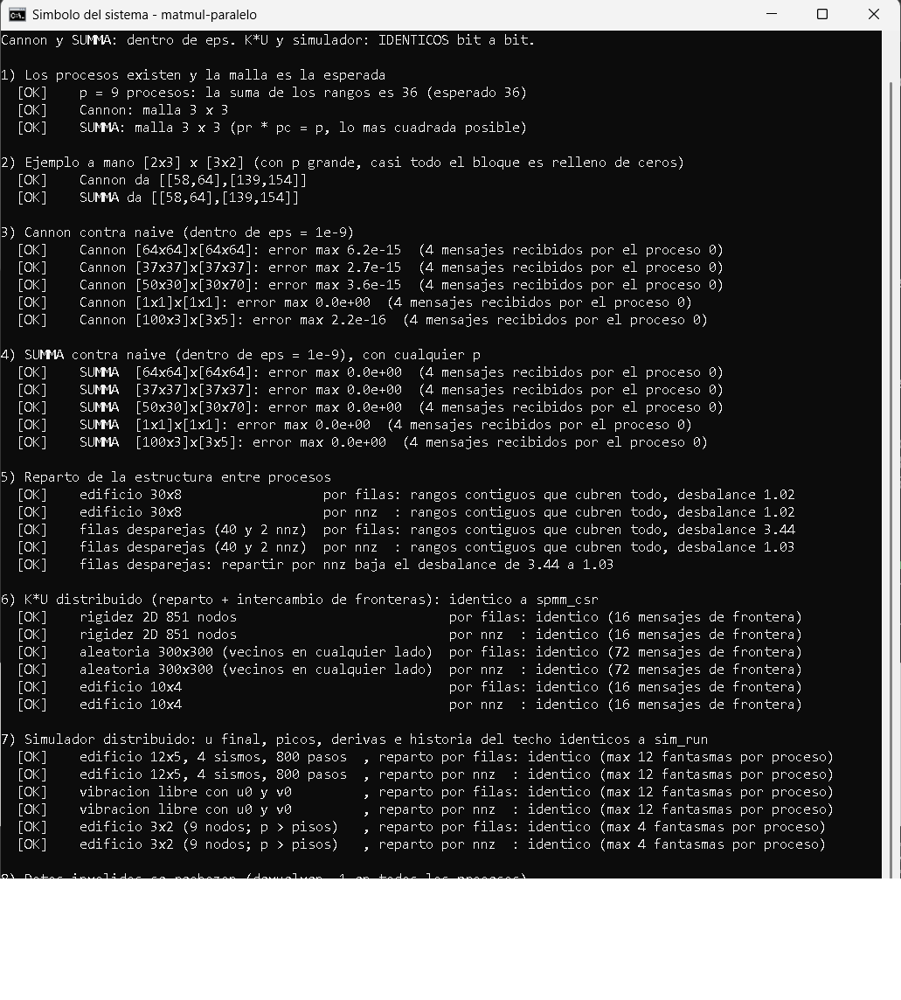
mpiexec -n 9 build\test_mpi.exe: la suite completa con 9 procesos (malla 3 × 3). 34 pruebas OK, 0 fallas.SUMMA calcula lo mismo, pero los bloques no cambian de dueño. El índice interno se recorre en paneles. En cada uno, el proceso que tiene el panel de A lo difunde a su fila de procesos y el que tiene el panel de B a su columna (MPI_Bcast en comunicadores de fila y de columna creados con MPI_Cart_sub). Funciona con cualquier p: 2 = 1×2, 6 = 2×3, 8 = 2×4. Con malla q × q hace q pasos, como Cannon.
MPI_Bcast(panelA, ..., dueno_A, comunicador_de_fila); MPI_Bcast(panelB, ..., dueno_B, comunicador_de_columna); local_gemm(panelA, panelB, c);
n = 1024, T(1) = 0.298 s (seq_ikj). Se mide la llamada completa: repartir A y B desde el proceso 0, calcular y juntar C. Mensajes y MB son los recibidos durante el cálculo, sumando todos los procesos.
| p | Malla | Cannon [s] | S(p) | SUMMA [s] | S(p) | Cannon msgs / MB | SUMMA msgs / MB |
|---|---|---|---|---|---|---|---|
| 2 | 1×2 | — | — | 0.157 | 1.90 | — | 2 / 8.4 |
| 4 | 2×2 | 0.115 | 2.58 | 0.113 | 2.63 | 12 / 25.2 | 8 / 16.8 |
| 8 | 2×4 | — | — | 0.084 | 3.57 | — | 40 / 33.6 |
| 9 | 3×3 | 0.084 | 3.56 | 0.084 | 3.55 | 48 / 44.9 | 36 / 33.7 |
| 16 | 4×4 | 0.128 | 2.32 | 0.145 | 2.06 | 120 / 62.9 | 96 / 50.3 |
| 16* | 4×4 | 0.075 | 3.96 | 0.075 | 3.97 | 120 / 62.9 | 96 / 50.3 |
* Con espera pasiva (-env MSMPI_PROGRESS_SPIN_LIMIT 1), ver sección 6. Con n = 2048 (T(1) = 2.89 s, seq_blocked64), Cannon llega a 3.32× y SUMMA a 3.89× (p = 8). Ahí cada matriz ocupa 32 MB y el cálculo local queda limitado por la RAM.
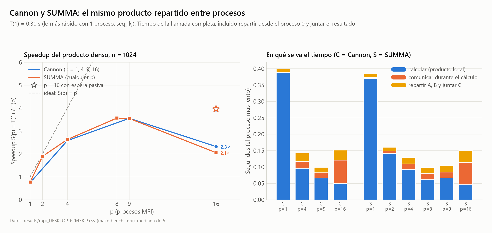
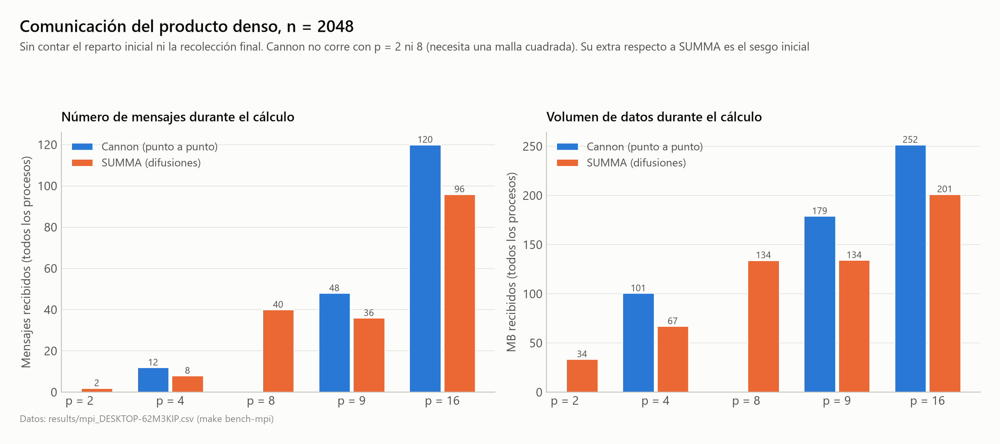
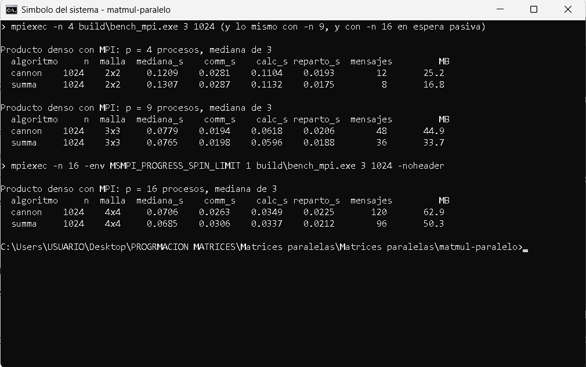
bench_mpi con n = 1024 y 4, 9 y 16 procesos (el de 16 con espera pasiva). Las columnas mensajes y MB muestran la diferencia de comunicación. Es una corrida de 3 repeticiones: los tiempos varían un poco respecto a la tabla, que es la mediana de 5.sim_run_mpi recibe los mismos datos que el simulador secuencial (en el proceso 0), reparte el edificio en franjas y, en cada paso de tiempo, cada proceso:
MPI_Irecv y MPI_Isend no bloqueantes y luego MPI_Waitall. Los fantasmas se reciben directamente en su lugar, sin copiar.Un solo intercambio por paso sirve para la deriva y para el K·U del paso siguiente. La lista de fantasmas se arma una vez al inicio: cada proceso pide a cada vecino los nodos que necesita, con MPI_Alltoall y MPI_Alltoallv. Por eso funciona con cualquier matriz dispersa y no solo con el edificio, como prueba el grupo 6 con una matriz aleatoria.
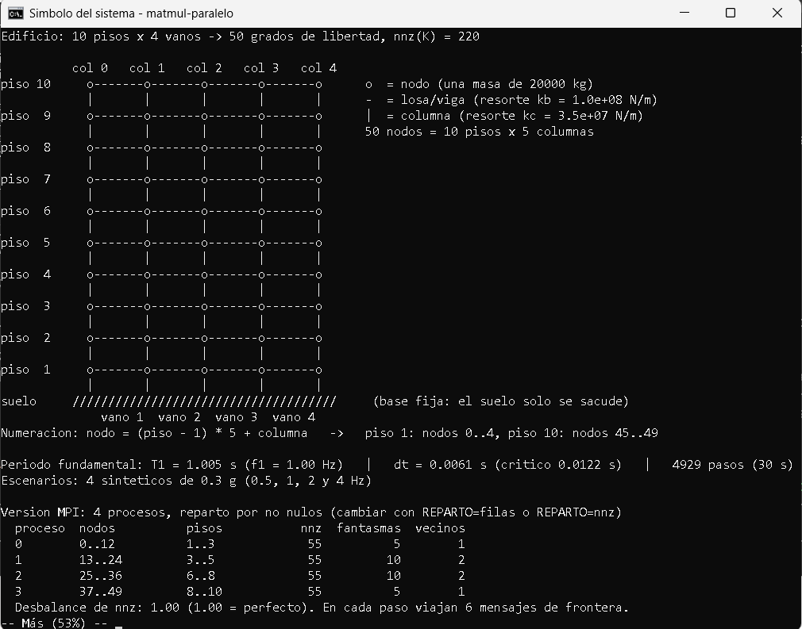
mpiexec -n 4 build\demo_sismo_mpi.exe 10 4, primera pantalla. Al final está la tabla del reparto: el proceso 1 tiene los nodos 13 a 24 (parte del piso 3, el 4 y parte del 5), 55 no nulos, 10 fantasmas y 2 vecinos. En cada paso viajan 6 mensajes.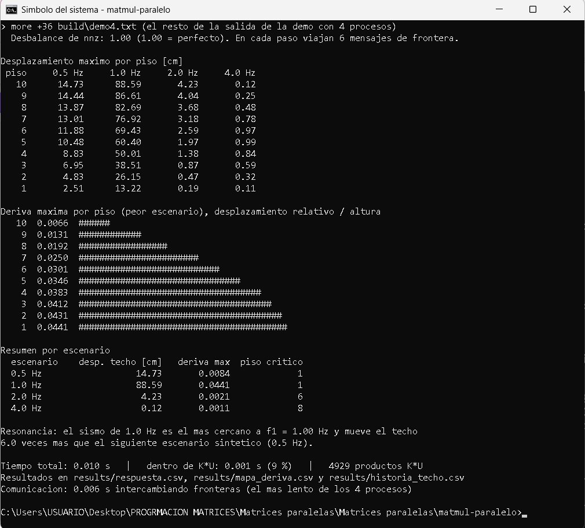
El criterio dice: "la simulación con MPI da los mismos desplazamientos que la secuencial con 1, 4, 9 y 16 procesos". Lo comprobamos de tres maneras:
| Prueba | Qué compara | Resultado |
|---|---|---|
Grupo 6 de test_mpi | K·U distribuido en 3 matrices × 2 repartos contra spmm_csr | idéntico bit a bit |
Grupo 7 de test_mpi | u final, picos, derivas e historia del techo contra sim_run: edificio 12×5 con 4 sismos, vibración libre con u0 y v0, y un edificio de 3×2 con más procesos que pisos | idéntico bit a bit |
| CSV de la demo | respuesta.csv, mapa_deriva.csv e historia_techo.csv con 4, 9 y 16 procesos contra la demo secuencial | iguales byte por byte |
spmm_csr, y la actualización de U usa exactamente las mismas operaciones. No hay ninguna razón para que cambie un bit. Si cambiara, sería un error de reparto o un fantasma desactualizado, y la prueba lo detectaría.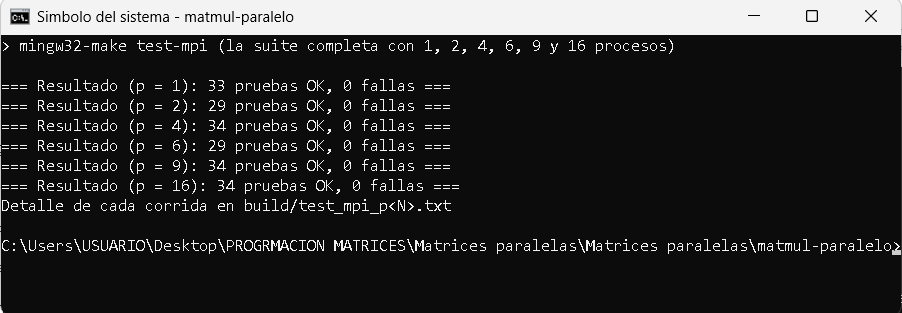
mingw32-make test-mpi: la suite con 1, 2, 4, 6, 9 y 16 procesos, 0 fallas en todas. Hay distinto número de pruebas porque Cannon solo aplica con p cuadrado y la prueba del balanceo solo con p > 1.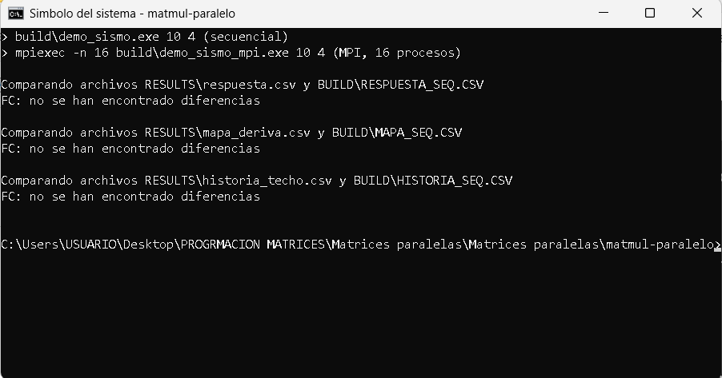
fc /b no encuentra ninguna diferencia.400 pasos, 8 sismos, reparto por nnz, mediana de 5. T(1) es lo más rápido medido con un proceso. En el edificio grande fue MPI con p = 1 (0.627 s), un poco más rápido que los dos secuenciales (0.703 y 0.672 s). Lo usamos como T(1) para no inflar el speedup, el mismo criterio que en S7.
| Edificio | T(1) | S(2) | S(4) | S(8) | S(9) | S(16) | S(16) pasiva | % comunic. (p = 8) |
|---|---|---|---|---|---|---|---|---|
| 20 × 50 (1 020 nodos) | 0.017 s | 1.29 | 2.19 | 3.50 | 3.38 | 0.03 | 1.64 | 51 % |
| 50 × 200 (10 050 nodos) | 0.165 s | 1.23 | 2.04 | 3.64 | 3.96 | 0.26 | 3.04 | 46 % |
| 100 × 400 (40 100 nodos) | 0.627 s | 1.21 | 2.32 | 3.57 | 3.71 | 0.64 | 2.88 | 28 % |
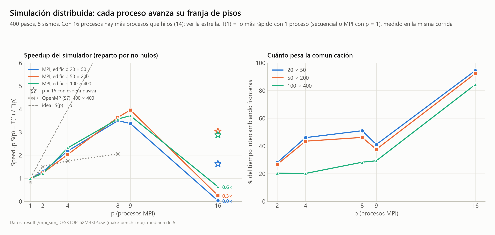
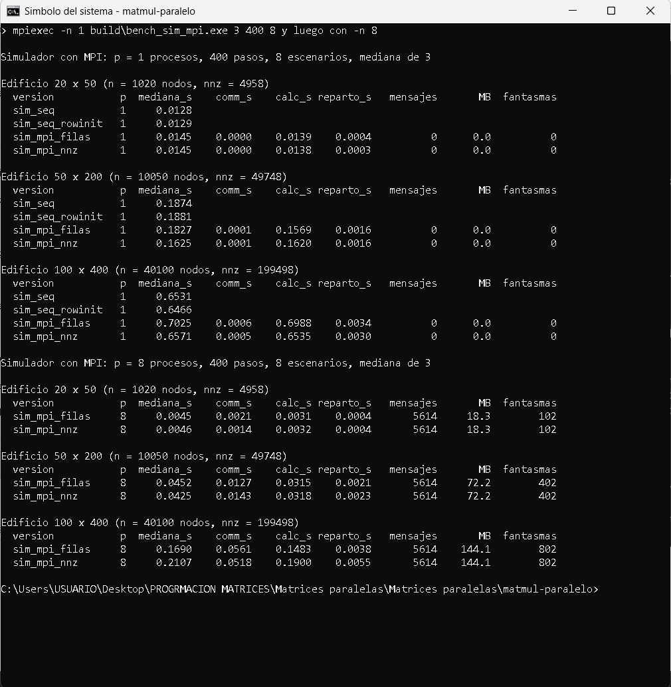
bench_sim_mpi con 1 y con 8 procesos (3 repeticiones). Cada versión se verifica contra el secuencial antes de medir. Se nota el ruido de la laptop: con 8 procesos, el reparto por filas y por nnz deberían tardar igual y aquí difieren en 0.04 s.Para que la diferencia se vea en vivo, carrera_mpi corre el edificio más grande (100 × 400 = 40 100 nodos) con 8 sismos a la vez y 20 s de sismo (3 286 pasos). Primero lo corre con 1 proceso usando el simulador secuencial, y luego con 2, 4 y 9 procesos usando MPI. Cada línea muestra el tiempo de principio a fin (incluido repartir el edificio y juntar el resultado), cuántas veces más rápido va y si el resultado es idéntico. Esto último se comprueba con una huella (hash) del desplazamiento final y de las derivas.
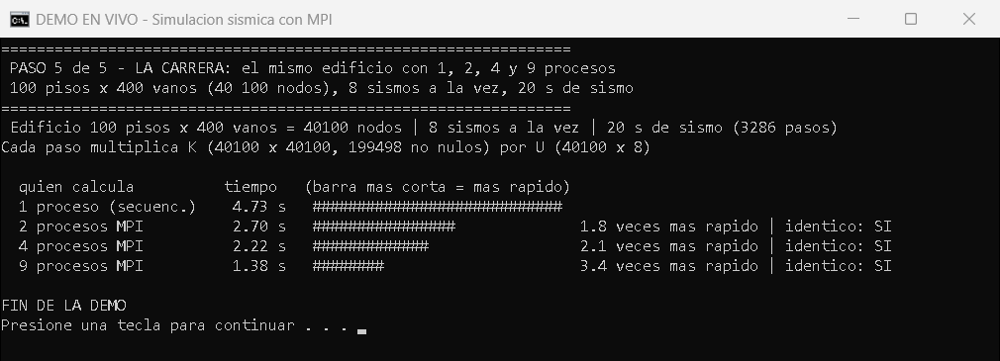
DEMO_MPI.bat (también make carrera-mpi): de 4.73 s con 1 proceso a 1.38 s con 9, es decir 3.4 veces más rápido, con identico: SI en cada fila. Entre corridas varía entre 3.2 y 3.7 veces.| Lo que se ve | Por qué |
|---|---|
| El speedup se queda en ~3.5–4× con 8 o 9 procesos | La laptop tiene solo 2 núcleos de rendimiento; los otros 10 son más lentos (8 eficientes y 2 de bajo consumo). Con 9 procesos casi todos corren en núcleos lentos, y todos comparten la misma RAM. |
| Con 16 procesos el simulador es más lento que con 1 (0.03× a 0.64×) | Más procesos (16) que hilos de hardware (14). MS-MPI espera los mensajes con espera activa: un bucle que pregunta "¿ya llegó?" sin soltar el núcleo. El proceso que espera le quita la CPU justo al vecino que debe mandarle el dato. El simulador se sincroniza con sus vecinos 400 veces, así que el efecto se acumula. |
Con MSMPI_PROGRESS_SPIN_LIMIT=1, 16 procesos vuelven a ~3× | Con espera pasiva, el que espera suelta el núcleo. Con 8 procesos, en cambio, la espera pasiva es un poco más lenta (0.188 s contra 0.172 s en 100 × 400), porque despertar cuesta tiempo. Solo conviene con más procesos que núcleos. |
| El producto denso sufre menos con 16 procesos | Se sincroniza solo q = 4 veces (no 400) y cada paso tiene mucho cálculo. |
| El edificio grande tiene menos comunicación | Se comunican siempre 2 filas de nodos, pero el cálculo crece con el edificio: 28 % del tiempo en comunicación en 100 × 400 contra 51 % en 20 × 50, con 8 procesos. |
| MPI con 8 procesos (3.6×) supera a OpenMP con 8 hilos (2.1×) en la misma laptop | En sim_run_omp todos los hilos se esperan en una barrera dos veces por paso; en MPI cada proceso espera solo a sus 2 vecinos. Además, cada proceso trabaja en su propia memoria. Son mediciones de días distintos (OpenMP del 15/10): conviene confirmarlo en la máquina oficial. |
| Repartir por filas o por nnz da lo mismo en el edificio | El desbalance por filas ya es 1.004. La diferencia aparece en matrices de filas desparejas (de 3.5 a 1.0 en la prueba). |
Archivo: Exposicion/Avance_S8_S11_MPI.pptx, con 12 láminas (copia en PDF: Avance_S8_S11_MPI.pdf). Cada lámina tiene en las notas del orador qué decir, qué señalar y qué responder si te preguntan. Ábrelas con la Vista del moderador (Alt + F5). El total es de unos 18 minutos con la demo. Si te dan 10, salta las láminas 5 y 10 y deja la demo en los pasos 1, 3 y 5 (la carrera nunca se salta: es lo que muestra la diferencia).
| Lámina | Tema | Qué decir (idea central) | Min |
|---|---|---|---|
| 1 | Portada | "En S7 mostramos hilos que comparten memoria; hoy, procesos con memoria propia que solo se hablan con mensajes, como en un clúster." | 0.5 |
| 2 | Dónde estamos | H1 y H2 cumplidos; hoy cerramos S9–S11 con el H3. Recorre las 4 cifras: 34 pruebas, 0 bits distintos, 4×, 2 algoritmos. | 1 |
| 3 | S8 · Diseño del reparto | Denso: malla 2D, cada proceso necesita una fila de A y una columna de B. Edificio: franjas de pisos; los recuadros rojos son los fantasmas del proceso 1. | 1.5 |
| 4 | S9 · Cannon | Lee una casilla: (1,2) tiene A10 y B02, el 0 coincide y puede multiplicar. Sesgo, multiplicar, rotar. Sendrecv_replace: todos rotan a la vez, sin interbloqueo. | 1.5 |
| 5 | S10 · SUMMA | Los bloques no se mueven: se difunden por fila y columna. Funciona con cualquier p. | 1.5 |
| 6 | S10 · Tabla comparativa | Mismo tiempo (3.56 contra 3.55 con 9); Cannon recibe más por el sesgo, 120 contra 96 mensajes, como dice la fórmula. | 1.5 |
| 7 | S11 · Simulación distribuida | Los 4 pasos de cada proceso; la tabla real de la demo: proceso 1, nodos 13 a 24, 10 fantasmas; balanceo por nnz, 55 cada uno. | 2 |
| 8 | H3 · Verificación | Pasa con 1, 4, 9 y 16 procesos (y con 2 y 6). Idéntico bit a bit; fc /b no encuentra diferencias. | 1.5 |
| 9 | Resultados | Hasta 4× con 9 procesos; MPI 3.6× contra OpenMP 2.1× con 8. | 1.5 |
| 10 | Lo que dicen los números | 16 procesos en 14 hilos: la espera activa lo hunde (0.64×) y la espera pasiva lo arregla (2.88×). Núcleos distintos y tamaño del edificio. | 1.5 |
| — | Demo en vivo | Sin lámina: después de la 10, cambia a VISUAL.bat (sección 8). Aclara que todo corre en una laptop y que el clúster viene en S12–S13. | 4 |
| 11 | La medición (B) | "El mismo sismo: de 0,59 s a 0,18 s con 8 procesos MPI, y los 4 motores idénticos." Es la respuesta a "¿sirve el paralelismo?". | 1.5 |
| 12 | Lo que sigue | S12–S13: el clúster (MPI en varias computadoras), el K·U de cada proceso en la GPU y solapar comunicación con cálculo. Preguntas. | 1 |
[nombre del docente] e [integrantes]).La demo es el programa visual de la expo pasada (matmul-paralelo\VISUAL.bat), que ahora tiene un cuarto motor: MPI. El visual lanza por detrás mpiexec -n p build\motor_mpi.exe. En cada cuadro les pide a los procesos avanzar unos pasos y recibe el desplazamiento de todos los nodos: así dibuja el edificio que calculó MPI y comprueba en vivo que es idéntico al del secuencial. Necesita MS-MPI instalado, así que conviene usar esta laptop. El guion completo, con capturas de cada pantalla y lo que hay que decir, está en Guion_S8_S11_MPI.pdf.
VISUAL.bat abierto y maximizado, en la bienvenida.| # | Teclas | Qué se ve y qué decir |
|---|---|---|
| 1 | cualquier tecla, 2, Espacio | Edificio chico (50 nodos), sismo de 1 Hz (resonancia). En la carrera, los 4 motores dicen ✓ idéntico. Con 50 nodos el paralelo pierde, MPI también: coordinar cuesta más que la cuenta. |
| 2 | M hasta "motor MPI", V | Vista por proceso: cada color es un proceso MPI con su franja de pisos. A la derecha, el reparto y los fantasmas de cada proceso. |
| 3 | V, E tres veces | Edificio muy grande (40 100 nodos): MPI gana la carrera (~1.9× con 4 procesos) y sigue idéntico. |
| 4 | + hasta 8, V | 8 franjas de colores; MPI ~2.4× en la carrera, donde los 4 motores comparten la laptop. |
| 5 | B (unos 30 s) | Medición en serio, cada motor solo: secuencial 0.59 s; MPI con 8 procesos 0.18 s = 3.3×; OpenMP 2.6×; Go 1.7×. |
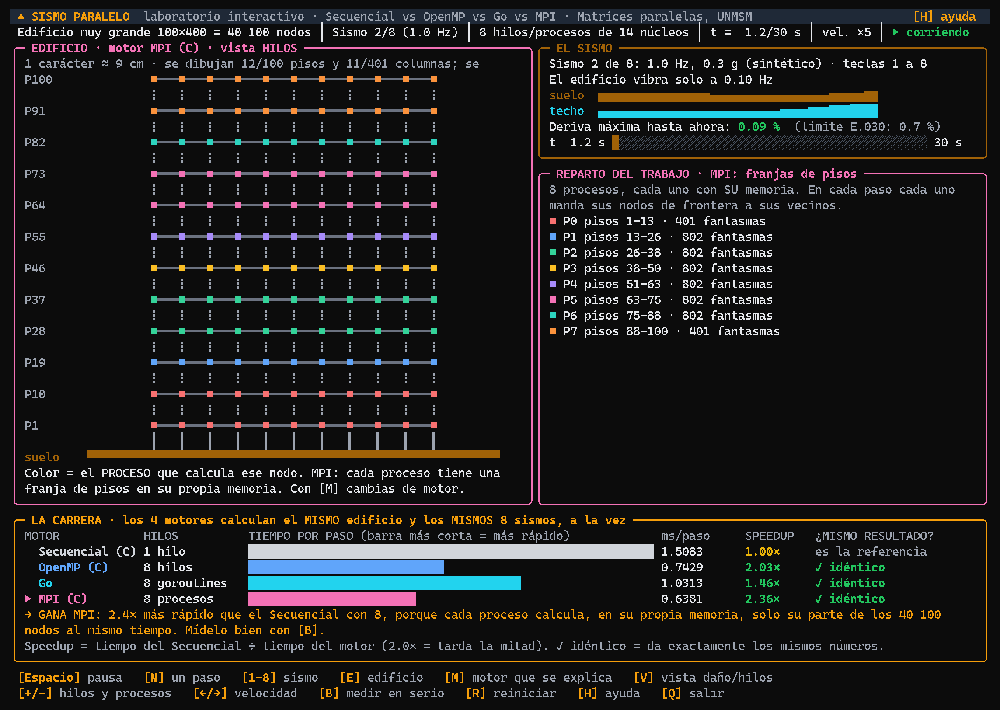
La demo por consola (DEMO_MPI.bat: pruebas del H3 con 1, 4, 9 y 16 procesos, Cannon contra SUMMA y la carrera de la captura 9) queda como complemento o plan B.
Si algo falla: cierra la ventana y muestra la captura correspondiente de este informe.
mpiexec -n 1 ... para ver el mensaje.-env MSMPI_PROGRESS_SPIN_LIMIT 1.Comandos sueltos por si quieres mostrar algo distinto (desde matmul-paralelo, en una terminal nueva):
mpiexec -n 9 build\demo_sismo_mpi.exe 10 4 REM el edificio con 9 procesos set REPARTO=filas & mpiexec -n 4 build\demo_sismo_mpi.exe 10 4 REM reparto por filas: desbalance 1.09 mpiexec -n 8 build\demo_sismo_mpi.exe 100 400 REM el edificio grande (40 100 nodos) mpiexec -n 6 build\test_mpi.exe REM SUMMA con malla 2x3; Cannon se rechaza mpiexec -n 1 build\carrera_mpi.exe 100 400 20 REM la carrera: siempre primero con -n 1 ... mpiexec -n 12 build\carrera_mpi.exe 100 400 20 REM ... y luego con los procesos que quieras
| Pregunta | Respuesta corta |
|---|---|
| ¿Por qué una malla 2D en el denso y franjas en el edificio? | En el denso cada proceso necesita una fila de bloques de A y una columna de B: en 2D son 2n²/√p datos en vez de n². En el edificio K es dispersa y cada nodo depende solo de sus vecinos: con franjas basta mandar 2 filas de nodos por paso. |
| ¿Qué es un nodo fantasma? | Una copia local, de solo lectura, de un nodo de otro proceso que necesito para mi K·U o para la deriva. Se actualiza en cada paso con el intercambio de fronteras. |
¿Por qué MPI_Sendrecv_replace en Cannon? | Manda y recibe en una llamada y sobre el mismo búfer: todos rotan a la vez sin interbloqueo (si todos hicieran MPI_Send primero podrían quedarse esperando) y sin memoria extra. |
¿Por qué MPI_Isend / MPI_Irecv en el simulador? | Cada proceso tiene 2 vecinos: con llamadas no bloqueantes se lanzan todos los mensajes a la vez y se espera al final con MPI_Waitall, sin depender del orden. |
| ¿Por qué SUMMA si ya está Cannon? | Funciona con cualquier p, no necesita sesgo inicial ni malla periódica, y es el esquema de bibliotecas como ScaLAPACK. |
| ¿El resultado de MPI es aproximado? | En el simulador no: es idéntico bit a bit. En Cannon y SUMMA, dentro de ε = 1e-9 (error real ~1e-15), porque el orden de las sumas cambia. |
| ¿Por qué no llega a 9× con 9 procesos? | La laptop tiene 2 núcleos rápidos y 10 eficientes, y la RAM es compartida. Además, el tiempo incluye repartir los datos desde el proceso 0 y la comunicación (28–51 %). |
| ¿Por qué MS-MPI y no OpenMPI? | Es el MPI nativo de Windows y funciona con el gcc que ya usábamos, sin instalar Linux. El código es el mismo y en Linux compila con mpicc. |
| ¿Por qué 16 procesos es tan lento? | Hay más procesos que hilos (14) y MS-MPI espera con espera activa. Con MSMPI_PROGRESS_SPIN_LIMIT=1 pasa de 0.64× a 2.88× (sección 6). |
make test-mpi y make bench-mpi en la máquina oficial. Los números de S7 y estos no se deben mezclar en una misma tabla.docs/actas.md, junto con lo de la espera pasiva para p mayor que los núcleos.docs/DISENO_REPARTO_MPI.md. Si el docente pedía un formato específico (por ejemplo IEEE), hay que adaptarlo.| Archivo | Qué es |
|---|---|
include/par_mpi.h | API MPI y sus convenciones (todo colectivo; datos por el proceso 0) |
src/mpi/cannon.c, summa.c | Los dos algoritmos densos |
src/mpi/sim_mpi.c | Reparto, fantasmas, intercambio de fronteras, K·U y simulador distribuidos |
src/mpi/mpi_common.c | Mallas, reparto de bloques, contadores de mensajes y bytes |
tests/test_mpi.c | La suite del H3 (8 grupos) |
bench/bench_mpi.c, bench_sim_mpi.c | Mediciones → results/mpi_*.csv |
scripts/graficos_s11.py | Figuras 10, 11 y 12 y tablas |
docs/DISENO_REPARTO_MPI.md | Diseño del reparto (S8) |
docs/GUIA_S9_S11.md | Guía completa: instalar, compilar, probar, medir, interpretar |
apps/carrera_mpi.c | La carrera: el mismo edificio con 1 a p procesos, tiempo, speedup y resultado idéntico |
DEMO_MPI.bat | La demo en vivo |
mingw32-make mpi # compilar (Git Bash; en Linux: make) mingw32-make test-mpi # pruebas con 1, 2, 4, 6, 9 y 16 procesos mingw32-make bench-mpi # mediciones (unos 15 minutos) mingw32-make figuras-s11 # figuras y tablas mingw32-make demo-mpi # la demo con 4 procesos mingw32-make carrera-mpi # la carrera con 1, 2, 4 y 9 procesos
Antes de todo esto, make test (70 pruebas) y make test-omp (51) siguen pasando: no se cambió nada de las fases anteriores, salvo que apps/demo_sismo.c ahora también compila en modo MPI con -DUSE_MPI.